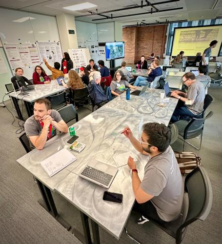

Imageomics Institute researchers published a new study advancing the process of conducting biological research through image-based machine learning tools.
The research, “A FAIR and modular image-based workflow for knowledge discovery in the emerging field of Imageomics,” was published in the British Ecological Society's journal. The work was spearheaded by lead author Meghan Balk as part of the National Science Foundation's Biology-Guided Neural Network (NSF's HDR DIRSE-IL award) and the Imageomics Institute.
A macroecologist at the Smithsonian Institute, Balk researches the evolutionary patterns and underlying mechanisms driving phenotypic changes in species across large spatial and temporal scales. She relies on museum specimens to collect data and is passionate about digitizing data to preserve and make FAIR these rich resources. She was previously part of a team that developed a trait database, FuTRES (futres.org), for vertebrate morphological measurements.
Balk said the work represents a significant step forward in biological and ecological research methodologies. The importance lies in its potential to vastly improve how biological data is handled and analyzed, leading to more robust discoveries in ecological and evolutionary biology.
Specifically, the study presents a conceptual workflow for machine learning applications on biological images, and then implements it for a case study using images of museum specimens such that it fully adheres to FAIR principles—findable, accessible, interoperable, and reusable—enabling fully automated and reproducible research.
One of the standout aspects of the research is the creation of modular and portable workflow components, which promote the reuse of machine learning models and allow for their adaptation to new research questions, a crucial advancement in the efficient use of burgeoning biological image data.
“The workflow both facilitates collaboration by centralizing all data and components, as well as emphasizes best practices for developing tools within a workflow that can be applied to different research avenues a collaborative team may want to explore,” Balk said.
Project co-author Hilmar Lapp, who is at Duke University and serves as Director of Informatics and Infrastructure of the Imageomics Institute, highlighted the study's innovative approach to interdisciplinary collaboration.
“For the first time, we lay out a template and a concrete implementation for how to achieve this across the different capabilities in an interdisciplinary team,” he said.
He also noted the novelty of their evaluation method, which applies FAIR criteria—traditionally used for data and software—to machine learning models, which joins other recent advancements in high-energy physics and is only starting to receive broader attention.
The team involved includes Imageomics Institute experts from various domains, highlighting the collaborative nature of modern scientific endeavors. With contributions from biologists, computer scientists, and software engineers, the research sets a precedent for future interdisciplinary projects.
Moving forward, the team plans to expand the application of their workflow to other datasets and refine their tools to accommodate an even broader range of scientific inquiries. The research will likely help influence how effectively biological sciences can leverage big data and machine learning for future research methodologies in the field.
Funded by the National Science Foundation, the Imageomics Institute is a new field of study led by The Ohio State University and advanced by collaborative researchers from around the world. Their work is transforming biomedical, agricultural, and basic biological sciences by using images of living organisms as the basis for unveiling Earth’s secrets toward a sustainable future.